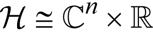
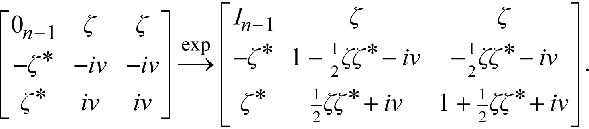

Plain HTML
A paragraph with x2 inline math.
And a y3 span.
xk
MathML
A paragraph with inline math.
TeX + MathJax
A paragraph with \(\sin(x)\) inline math.
And a \(\cos(y)\) span.
\[J_\alpha(x) = \sum\limits_{m=0}^\infty \frac{(-1)^m}{m! \, \Gamma(m + \alpha + 1)}{\bigl({\frac{x}{2}}\bigr)}^{2 m + \alpha}\]
MathML + MathJax
A paragraph with inline math
Images
A paragraph with

inline math
